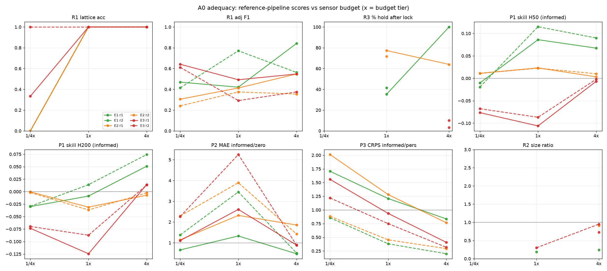

Every earlier physim tier measured the world through fixed anonymous sensors — point taps wired once per world, plus global aggregates. That works for bulk matter: the interesting state is collective (phases, fronts, hysteresis), and any fixed tap sits in the phenomenon.
The evolved worlds are different in one decisive way: they are particulate. The interesting objects are localized, mobile, and sparse — 21 stable blobs in a 128×128-unit box in the entry world. A fixed point tap almost surely sits in vacuum, and a blob that drifts through its aperture once per thousand time units produces a spike train indistinguishable from noise bursts. Worse, the natural actions ("poke it", "push a blob in") are spatial: a point-force interface can't even express them. The instruments had to become spatial without ever disclosing space.
One device = k point sensors in a rigid local patch around a
movable center, sampling every world field bilinearly (continuum-honest — no
grid reads), plus a co-located emitter at the center. The agent gets, per
device:
| control | surface | what's hidden |
|---|---|---|
| streams | k × n_ports anonymous scalar channels @ 5 tu | node layout (square-13 / hex-19 / …), node order (secretly permuted), port identities (secretly permuted per world) |
| actuator | 3 anonymous channels u ∈ [−1,1]³, cost |u₁|+|u₂|+|u₃| per step, charged as commanded | what the channels do: two translate the device, one scales its sensor
spacing — in a fixed global convention that is simply never documented
(undocumented IS the mechanism, exactly like the fixed output retinotopy:
nature wires actuators once, mastery transfers across worlds, and the WORLD
is what varies). Spacing has undisclosed bounds; a step that would cross one
is refused with a generic adjust_rejected — and still costs its
commanded effort (strain), so the refusal is not a free bound-measuring
oracle. Pure-translation steps are never refused |
| emission | inject(port, amp, dur) through one fixed emission channel, budgeted | the emitter's location and coupling (post-round-1 revision: originally disclosed as co-located with a device; now fully undisclosed — localizing it from decaying transients is intended science, and fable-5 did exactly that in round 1), the stamp profile (σ=2 Gaussian), what the port drives |
| global stats | free per-port mean/variance of the whole medium | everything spatial — it's a weather report, not a map |
The only structural facts an agent ever sees are counts: 2 devices, 13 and 19 slots, 12 ports, 3 actuator channels. Everything else — that slots form a lattice, that the two devices differ in geometry, what each actuator channel does, that the box wraps — is discoverable, priced science.
Before any agent burns tokens, the instrument itself went under test — the same discipline as post 2's telescope fix (IMEX-FFT) and post 9's parity gates. The A0 adequacy study asks: can scripted reference pipelines, speaking only the agent-facing surface, do science through this thing at all? And at what sensor budget does capability die?
Setup: 3 worlds × 3 seeds × 3 budget tiers × 2 device rosters = 54 cells. Each (world, seed) is simulated once to 2,500 tu and cached (f16 frames at 5 tu + truth blob lists + an f32 mid-run snapshot with RNG state); passive pipeline work replays the cache (sensors don't disturb the field — replay was gated against live stepping), and injection branches run live once and are shared. That sim-once/replay-many design is what made 54 cells affordable on a laptop (~4.5 CPU-hours of sim; each pipeline cell replays in seconds).
The scripted pipelines are honest instrument users, not oracles: correlation → MDS embedding for geometry, dilation wiggles for radial structure, hold-still drift subtraction for motion calibration, an online-threshold WATCH/TRACK state machine for blob pursuit, AR2/persistence/template forecasters for contracts.

| capability (scripted pipelines) | E1 sparse (21 blobs) | E2 champion (labyrinth+rotors) | E3 swarm (151 organisms) |
|---|---|---|---|
| identify own lattice class | 100% at 1×, dies at 1/4× | same cliff | same cliff |
| recover motion basis (prereq for all closed-loop skill) | 67% at 4×, 33% at 1×, 0% at 1/4× | 100/33/0% | 33/33/0% |
| detect particulateness | 100% all tiers | 4× only | 4× reliably |
| acquire + hold a blob (tracking) | acquires when calibrated; ~100% hold, 79% same-blob retention | acquires (labyrinth is everywhere); identity ill-posed (51%) | 10% — swarm steals the target |
| P1 stream forecast skill vs climatology (H=50/200 tu) | +7% / +5% | ~0 | ~0 |
| P2 event-rate forecast vs zero baseline | 4.5× better | ~ties | ~ties |
| P3 injection-response prediction vs persistence | 5.0× better | 3.4× | 3.2× |
| announced-injection detectability (z-score) | 620–960 | ~5,900 | ~8–10k |
Three findings drove the round-1 configuration:
F1 — the budget knee is between 1× and 4×. Geometry survives down to 1×; the motion basis needs 4×; nothing survives 1/16 duty. So round 1 runs at 2× baseline — ON the steep part of the curve. Self-calibration is neither free nor hopeless; budget skill is real skill.
F2 — P1 as originally specified was nearly skill-free. The fields decorrelate in 10–30 tu at a fixed point, so forecasting raw streams at H=50–200 tu is mostly irreducible noise — AR2 beats climatology by 7% on the easiest world and ~0 elsewhere. A contract that cannot separate a good agent from persistence is dead weight. Round 1 respecs P1 to horizons ≤ 25 tu (where autocorrelation still carries signal) and demotes it to tertiary weight.
F3 — P3 is the healthiest contract everywhere — causal, budget-sensitive, world-robust (3–5× over persistence on every world). It becomes the flagship. But the A0 announced amplitude (3.0) turned out to be a free beacon: response z-scores of 600–10,000 mean any agent that pokes at amp 3 sees the answer glowing. Round 1 therefore caps agent emissions at amp ≤ 1.0 with steeply convex pricing above 0.5 — while the announced protocol stays at amp 3. Predicting the announced response now requires calibrating below the cap and extrapolating: response science, not response reading.
probe_move(a1, a2) +
probe_dilate(gain): leaking, through the API shape alone, that
the pose space factorizes into two translation axes plus a zoom, and telling
agents the emitter was co-located with a device. The post-round-1 audit
(TRACKA_R2_CONTROLS.md) replaced both tools with one 3-channel
probe_adjust whose channels secretly mixed translation and
spacing through a random linear map — and that revision was itself retired a
day later (verdict: mixing is difficulty without depth, the same reasoning
that rejected shuffled sensors; the in-flight round-2 rollouts were killed,
nothing from them scored). The final surface: probe_adjust's
channels have PURE effects under a fixed global convention — u1→dx (×1.5),
u2→dy (×1.5), u3→dlog-spacing (×1.0) — that is simply never documented:
barrier by undocumentation, exactly like the fixed output retinotopy (nature
wires actuators once, mastery transfers across worlds, and the WORLD is what
varies). What survives from R2: refusals at the undisclosed spacing bounds
are generic (adjust_rejected) and still cost their commanded
effort ("strain" — no free binary-search on the bounds), and the emission
channel's location is undisclosed (localizing it from decaying transients is
intended science — fable-5 demonstrated exactly that in round 1). The
tightened tag is BLOB-E1r3; round 3 re-ran the same episodes on
it, and the score difference prices the leak (section 6).The benchmark ships as difficulty families in the existing physim verifiers
environment — rounds 1–3 ran BLOB-E1→BLOB-E1r3 (E2/E3
registered but gated pending a contract respec); the current families are
BLOB2-E1/BLOB2-E2 (section 7). Same harness stack the
C/D-track used: the world is an MCP tool server, the agent is a coding harness
with a workspace, files, and its own offline modeling loop. Everything below in
this section — episode shape, budgets, replica forks — carries unchanged into
BLOB2; the contract ladder at the end of the section is the round-1 design that
sections 6–7 retire.
The hard stop is the information structure: everything after t=1700 is exactly what the contracts ask about, so it is never directly observable. The replica mechanism prices causal experimentation separately from passive observation — and because replicas share the start state and noise stream, differences between them are pure causal response.
| contract | weight | ask | scored | locked |
|---|---|---|---|---|
| P3 response (flagship) | 0.5 | the harness announces: amp-3.0, 10 tu emission on a named port through the fixed emission channel at span end. Predict device 1's streams at 13 announced lags (5–250 tu) | CRPS vs the cached truth branch | open all episode |
| P2 events | 0.3 | upward-crossing counts of an announced (port, threshold, sign) on device 0, per 50 tu window, 16 windows after span end | CRPS (MAE reported) | at first inject() — forecasts are issued from span information |
| P1′ forecast (respec'd) | 0.2 | device 0's streams at +5/+15/+25 tu after span end, no injection | CRPS |
Every contract answer is a mean + honest sigma; scoring is CRPS normalized against scripted reference baselines (persistence/climatology for streams, the better of zero/pre-span-rate for events): match the reference → 0, halve its error with honest uncertainty → real points. The announced P2 quantity is chosen by the A0 rule (the sparse-excursion port with the highest pre-span crossing rate) so the contract is never trivially zero — an E1/E2 lesson from the adequacy study, where home-anchor event rates could be degenerate.
Notebook, files, and offline compute come free with the coding harness — the agent is expected to dump every read to disk and model offline, exactly like the C-track scientists did. Budgets are enforced server-side; a rejected action costs nothing but a turn.
The environment is new code wrapping certified physics, so it gets its own
gate: a scripted actor — the A0 informed pipeline re-expressed against
the MCP tool surface — plays a full episode through the agent interface (burst
reads at ~½ duty, duty-corrected event-rate estimation, then a control replica
plus three sub-cap calibration emissions, linear template scaled to the
announced amplitude). If the environment is honest, that actor must reproduce
adequacy-grade skill without touching a single internal API. The result
table lives in the scorecard
(probes/blobs/agentenv/results/smoke_blob_s928.json); the headline:
the tool-surface actor lands the P3 informed-vs-persistence ratio in the
adequacy band and stays inside every budget. Two structural gates ride along:
the amp-0 control replica is bitwise identical to the A0 cached control
branch, and the barrier grep covers every string the actor ever saw.
Every round puts two frontier coding harnesses on the environment, three rollouts each, alongside the scripted reference row — the same roster from round 1 through round 4:
| row | agent | harness | what it tests |
|---|---|---|---|
| 1 | Fable 5 (Anthropic) | claude_code | full loop: self-calibration → span science → replica calibration → contract submission |
| 2 | gpt-5.6-sol (OpenAI) | codex | |
| 0 | scripted informed pipeline (null harness) | — | the floor that agents must beat: A0 reference science through the same tools |
Conduct metrics (budget-use fractions, replica counts, turn counts) are report-only, as everywhere in physim. The interesting comparisons: does an agent choose to calibrate its instrument before spending on contracts? Does it discover the amp cap's pricing structure and run rational calibration ladders? Does anyone beat the duty-corrected event-rate trick?
Round 1 ran in full on the original surface; the leak audit and the two
interface revisions above followed it; round 3 re-ran the same episodes on the
tightened BLOB-E1r3. The scores (episode reward, mean over 3
rollouts):
| round | tag / surface | fable-5 | gpt-5.6-sol | scripted actor |
|---|---|---|---|---|
| 1 | BLOB-E1 — documented semantic controls (move/dilate), emitter co-location disclosed | 0.689 | 0.08 | 0.60 |
| 2 | BLOB-E1r2 — mixed opaque controls | killed in flight (mixing = difficulty without depth); nothing scored | ||
| 3 | BLOB-E1r3 — tightened surface after the leak audit | 0.632 | 0.05 | 0.60* |
Finding 1 — the interface leak had a measurable price. fable-5 beat the scripted floor cleanly on the round-1 surface; sol never got a scoring episode together in either round (0.08 / 0.05, reported as-is). Re-running fable on the tightened surface cost ~0.06 of score (0.689 → 0.632): that difference is the isolated value of the leak — points that had been purchased by the API shape disclosing the pose factorization and the emitter location, not by science through the streams. The instrument was measuring itself into the score.
Finding 2 — nobody touched the actuators. Across all 12 scored
rollouts of rounds 1+3, zero actuator use in anger: the only adjust spend was
one u1-identification test by fable in a round-3 rollout, whose answer was
never exploited. The diagnosis is a benchmark flaw, not agent laziness:
BLOB-E1 was fixed-pose-solvable — every contract in the
P3/P2/P1′ menu answerable from the spawn pose. The world had a discoverable
pose space; the contracts never priced it; so rational agents ignored it.
Actuators priced but useless.
Rather than patch the menu, the redesign restarted from first principles
(TRACKA_CLEANSLATE_EVAL.md): "understanding a world" decomposes
into gradeable capabilities — ontology, dynamics, causality, transfer, economy
— under three grading rules. Never grade descriptions (language is gameable);
grade the predictive consequences of having the right description.
Contracts are the curriculum (design the set to span the capabilities). And
score skill, not raw accuracy — round-1 P1 had looked "nearly
skill-free" precisely because raw CRPS was scored on a world where persistence
saturates; skill normalization shows the ~0 honestly instead of hiding it in
the scale.
The audit's verdict on the historical assets was clean: the episode machinery (replay → hard stop → replica forks), CRPS + honest-sigma scoring, the budget system, the barrier mechanisms, report-only conduct metrics, and the scripted-baseline-actor pattern all survive scrutiny unchanged. The design was right; the contract menu was track-shaped. It was replaced by a capability ladder:
| tier | ask (all announced text is pose/geometry-free) | what it prices |
|---|---|---|
| L1 pose-targeted | K=3 announced opaque command sequences ([u1,u2,u3] lists, wall-safe by construction), each executed from device 0's t=0 configuration on a passive fork; predict the streams after the final command of each | actuator calibration + local spatial modeling — the rounds-1–3 gap, now priced |
| L2 hidden-sensor nowcast | the harness owns one extra 13-slot sensor cluster at an undisclosed pose; predict its reading vector at span end | spatial world-modeling — interpolating to a place you never sampled needs a field/object model |
| L3F multi-horizon forecast | device-0 streams at H = 5/25/100/400 tu (E2 drops the H=5 leg) | the deterministic→stochastic transition; honest sigma widening is skill |
| L3E events (E1 menu) | upward-crossing counts per 50 tu window, 16 windows — round-1 P2 kept | object-flavored dynamics in a particulate world |
| L3S slow observables (E2 menu) | per-port global mean+variance over 200 tu windows ending at T0+400 / T0+800 | structural trends — the frozen-census/reorganizing-matter split post 10's films exposed |
| L4 response | announced amp-3.0 emission; predict device-1 streams at 6 announced lags (slimmed from 13) — round-1 P3 kept | causal prediction under the amp cap |
| L4D dose-response | submit a response table over announced amps 0.30/0.45/0.60/0.75/0.90 at 3 lags; scored at ONE amp drawn secretly from U[0.3, 0.9], interpolating the agent's table against a live replica at the drawn amp | law-learning vs point-matching — the other structural gap, now priced |
Zero now means "matched the best scripted baseline" on every contract regardless of world difficulty; positive skill is real signal; and skipping a contract costs −1, so the curriculum cannot be dodged. Forecast tiers (L1/L2/L3*) lock at the first injection; the response tiers stay open.
Fixed menus misprice heterogeneous worlds (E1 needs little geometry; E2 punishes its absence). The evaluator knows each world's certified phenomenology from the assay records — species counts, spatial class, motion class, timescales — so the menu is generated per world: every certified phenomenon gets at least one contract that prices it, and no contract references phenomena the world lacks. The selection is evaluator-side knowledge only; the menu discloses nothing beyond what any contract necessarily discloses about what is measurable.
| tag | world | menu |
|---|---|---|
BLOB2-E1 | p4g2_044 — 21 sparse stable blobs (the rounds-1–3 world) | L1 · L2 · L3F(H=5–400) · L3E · L4 · L4D |
BLOB2-E2 | p6g8_033 — the campaign champion (reorganizing labyrinth + rotors), gate opened with its A0-caveat menu: blob-identity and event contracts stay off | L1 · L2 · L3F(no H=5) · L3S · L4 · L4D |
Both tags are harder than rounds 1–3 even where the world is the same: the hidden sensor and the dose leg have no fixed-pose shortcut, an unsubmitted contract is −1 instead of 0, the system prompt lost its "suggested science" hints (round-3 evidence: fable follows its own program anyway; hints anchor and leak our framing of what is interesting), and the whole surface re-passed an extended barrier audit (zero pose/location/actuator-semantics language, the L2 wording especially). Episode machinery, budgets, and the amp-1.0 cap are unchanged from section 3.
The null-harness pattern (section 4) repeats: the A0-grade scripted actor
plays full episodes through the MCP tools only (smoke_blob2.py),
and its per-contract skill table ships with the environment as the published
reference row:
| contract | E1 skill | E2 skill | note |
|---|---|---|---|
| L1 | +0.15 | +0.11 | executes the announced walks on-span, reads, walks back |
| L2 | −0.00 | −0.00 | honest gap: the script has no spatial model — it ties the global-aggregate baseline. That IS the measurement; L2 headroom belongs to agents that build one |
| L3F | −0.06 | −0.06 | AR(2)/climatology blend ≈ the ladder's own AR(2) |
| L3E | −0.55 | — | trend extrapolation undershot this seed's rate lift — honest scripted weakness |
| L3S | — | −0.29 | persistence of the last window; sigma too tight on the variance column |
| L4 | +0.89 | +0.65 | control replica + sub-cap calibration template, 4 replicas |
| L4D | +0.99 | +0.99 | a linear dose law nails the drawn amp |
| reward | +0.238 | +0.233 | mean over menu; budgets respected, all contracts submitted, ~225 s wall |
The negative rows stay in print deliberately — skill scoring is supposed to show scripted weaknesses honestly, and agents beating zero on L2/L3E/L3S is exactly the signal round 4 exists to measure. Round-2 gates G1–G6 pass (menu registry, L1 pose/truth parity through the agent surface, dose-interpolation exactness, skill clipping, the extended barrier audit, submit/locks) alongside the legacy six.
Round 4 ran the roster on both BLOB2 tags — 3 rollouts per (model, world); fable-5 via the claude_code harness, gpt-5.6-sol via codex, docker runtime, all rollouts through pinference (transient 5xx bursts cost resumes, not data — all six fable rollouts completed).
| row | BLOB2-E1 reward (rollouts) | BLOB2-E2 reward (rollouts) |
|---|---|---|
| fable-5 (n=3) | +0.308 (0.268 / 0.287 / 0.370) | +0.287 (0.159 / 0.248 / 0.454) |
| scripted actor (published floor) | +0.238 | +0.233 |
| gpt-5.6-sol (n=3) | −0.42 … −0.67 | −0.22 … −0.67 |
fable-5's per-tier means across the three rollouts:
| world | L1 | L2 | L3F | L3E | L3S | L4 | L4D |
|---|---|---|---|---|---|---|---|
| E1 | 0.28 | −0.00 | 0.26 | −0.02 | — | 0.61 | 0.72 |
| E2 | 0.08 | 0.20 | 0.00 | — | 0.47 | 0.43 | 0.55 |
Readings, in order of confidence:
The bar is cleared, on both worlds. fable-5 beats the published scripted floor by +0.07 on E1 and +0.05 on E2 — the first positive-skill agent result on the clean-slate system. The margin is modest, and it comes from the right place: on the tiers where the script is already strong (L4/L4D) the per-tier means stay below the script's rows, and the lead is built where the script is honestly weak (L3F +0.26 vs −0.06 on E1; L3S +0.47 vs −0.29 and L2 +0.20 vs −0.00 on E2).
The dose leg is where agents shine. L4/L4D are fable's strongest tiers everywhere, with L4D spiking to 0.99 in one rollout per world — the calibrate-below-the-cap, fit-the-law, interpolate strategy executed at agent quality. Law-learning is the capability the redesign added, and it is the one agents deliver on first.
L2 is dented, not cracked. The hidden-sensor nowcast — the tier built to price spatial world-modeling — is still ~0 on E1 in all three rollouts; on E2 two of three rollouts posted 0.28. Partial skill means a partial spatial model exists. The open-headroom tier is being dented, not cracked.
Flat spots. L3E stayed flat-to-negative on E1 (−0.02 — well above the script's −0.55, still no skill), and L1 is only modestly positive on both worlds: the ladder now pays for actuator science, and after the zero-actuator rounds that much works — but calibration quality is ordinary.
Variance is the caveat. E2 rollouts span 0.16 → 0.45. n=3 is a floor, not a book: the defensible sentence is "fable-5 clears the scripted bar on both worlds", not any per-tier ranking beyond the spikes above.
And the sol row is a result, not a footnote: negative on every rollout of both worlds under a rule where matching a scripted baseline scores 0 and an unsubmitted contract costs −1. The harness gap that rounds 1 and 3 exposed (0.08/0.05 vs fable's 0.689/0.632) survives the redesign intact.
.venv/bin/python environments/physim/tools/test_blob_server.py (legacy six) ·
.venv/bin/python environments/physim/tools/test_blob_round2.py (round-2 G1–G6) ·
scripted floors: .venv/bin/python environments/physim/tools/smoke_blob2.py --world E1
(writes results/smoke_blob2_E1.json; same for E2) ·
adequacy study: probes/blobs/agentenv/adequacy.py (cache → evalgroup → aggregate)
with the blobkit venv · an agent episode:
.venv/bin/eval physim -n 3 -m <model> --env.taskset.difficulty BLOB2-E1
--env.scientist.harness.id claude_code --env.scientist.runtime.type docker
--env.scientist.max-turns 150 (E2: same shape, higher turn cap — bigger menu).
A0 caches are local artifacts (7–11 GB, gitignored; rebuild via adequacy.py);
round-2 dose-truth caches rebuild in ~30 s each under
probes/blobs/agentenv/cache/round2/. Round-4 log:
probes/blobs/agentenv/round4/ROUND4_FINAL.md.